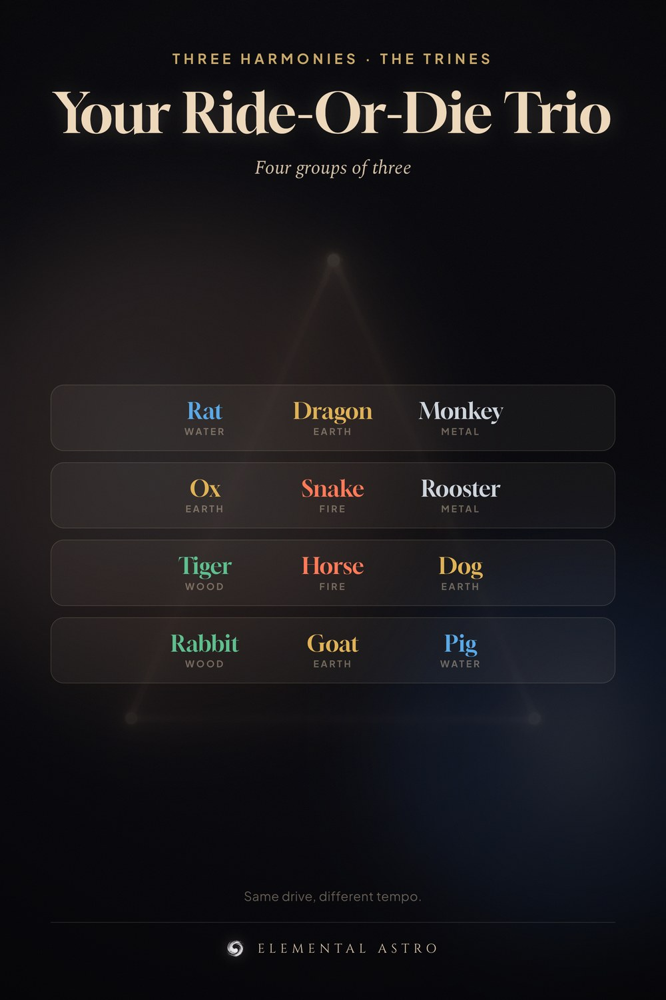

The three-harmony trines are the ride-or-die groups of the Chinese zodiac. Rat, Dragon, Monkey. Ox, Snake, Rooster. Tiger, Horse, Dog. Rabbit, Goat, Pig. Each trio shares a driving element, which is why they read each other so easily. Save it — it explains most of your friendships. Chinese zodiac compatibility chart, three harmonies, Chinese astrology.
https://www.elementalastro.io/tools/chinese-zodiac-compatibility